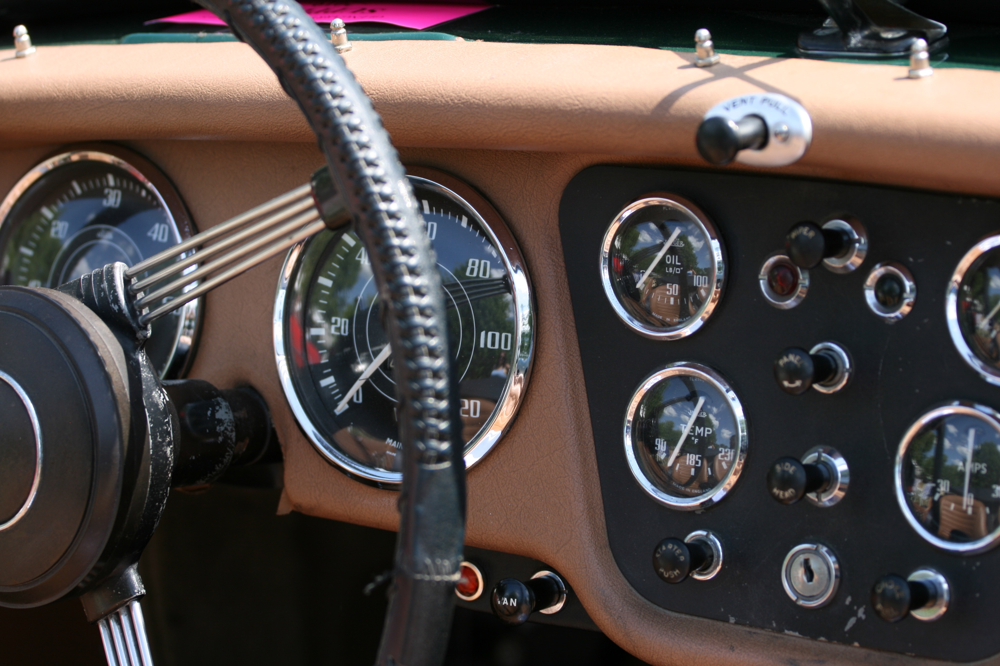
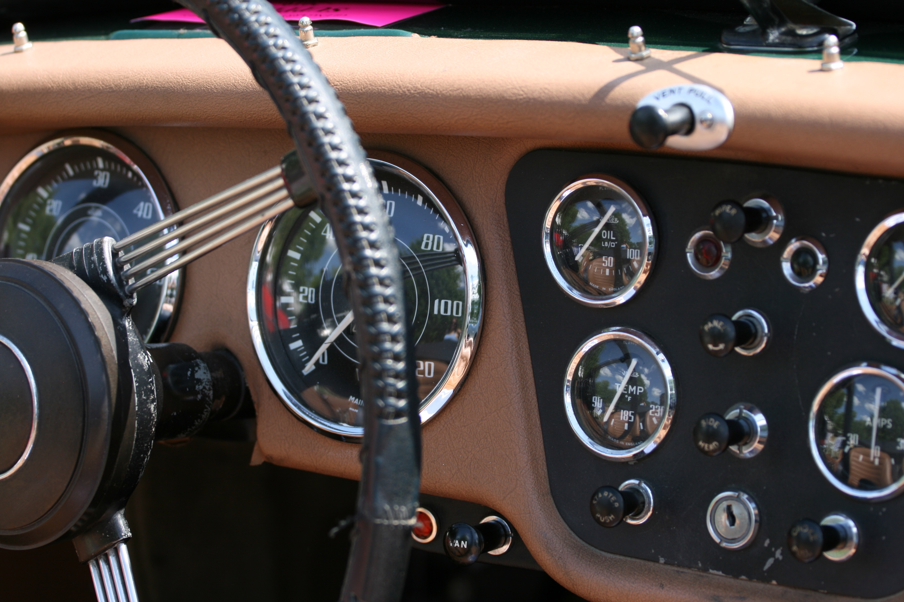

Stiai ca.. ?
Cele mai multe masini noi(mai "tinere" de 2 ani) se afla in Bucuresti si Ilfov. Salaj, Bistrita Nasaud, Mehedinti si Suceava se afla in topul judetelor cu cele mai multe masini mai vechi de 12 ani.
Stiai ca.. ?
Romania este una dintre tarile europene cu cel mai imbatranit parc auto cu o varsta medie de 16,3 ani. Doar doua tari au o medie sub a noastra: Estonia- 16,7 ani si Lituania- 16,9 ani. La polul opus se afla Luxemburg cu o varsta medie de 6,4 ani si Austria cu 8,2 ani.
Stiai ca.. ?
Pentru prima data in istorie, Romania a depasit pragul de 8 milioane de vehicule aflate in circulatie in anul 2019.
Stiai ca.. ?
Incepand cu anul 1999 si pana in prezent, in Romania cea mai mare cota de piata o are firma Dacia.
APaX - Auto Park Web Explorer
APaX pune la dispozitie vizualizarea si compararea datelor publice privind parcul auto
din Romania.
Link-uri utile:
Site-ul web cu statistici privind parcul auto al Guvernului Romaniei
https://data.gov.ro/dataset/parc-auto-romania
Rabla - Programul de innoire a parcului auto
https://ro.wikipedia.org/wiki/Rabla
 
